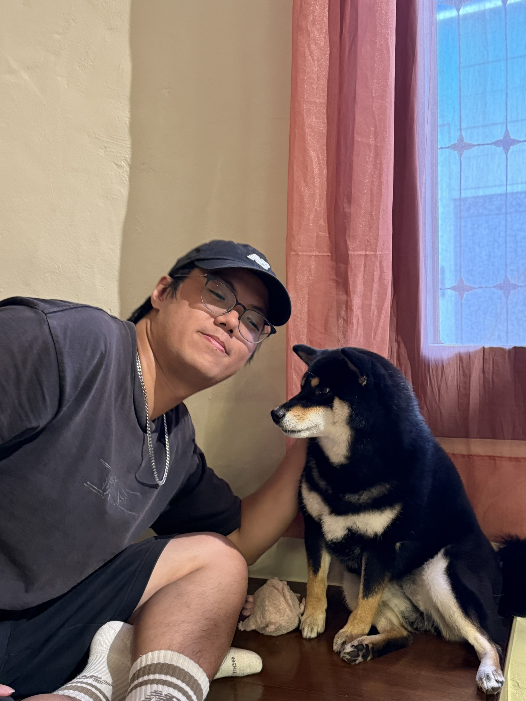

程式語言
C、C++、JavaScript、PHP、HTML/CSS，另修習 R 語言以培養大數據時代下的 資料處理能力，具備扎實的程式設計基礎。

國立中興大學 資訊工程學系 碩士在學中
畢業於國立臺中教育大學資訊工程學系，現就讀國立中興大學資訊工程學系碩士班， 隸屬作業系統與網路實驗室。目前研究方向為 LLM Inference 系統優化，希望運用 persistent memory byte-addressable 的特性加速推理，並設計更聰明的 memory allocation 策略，降低 KV Cache 面對長文本時產生的影響。
C、C++、JavaScript、PHP、HTML/CSS，另修習 R 語言以培養大數據時代下的 資料處理能力，具備扎實的程式設計基礎。
前端 Vue.js／React.js，後端 Node.js／Express.js，熟悉資料庫與部署流程， 對 html、CSS、JavaScript 及 php 皆有相當熟悉度。
碩士加入作業系統與網路實驗室，目前研究 LLM Inference 的系統優化，專注 persistent memory byte-addressable 特性與更聰明的 memory allocation 策略。
畢業專題中負責推薦系統開發，運用 Content-based Recommendation 與 Collaborative Filtering，依網站不同階段的使用人數進行推薦。
結合 NFT 與人工智慧概念的校園藝術平台，整合線上展示、推廣、教育、交易與收藏 管理，讓校園內尚未成名的創作者也能展示作品並與潛在欣賞者連結。開發過程中因前後端 串接遇到瓶頸，改沿用系上學長以 WordPress 建置的網站，我的工作也從前端系統建置 （Vue.js）轉為推薦系統開發：運用 Content-based Recommendation 與 Collaborative Filtering，依網站不同階段的使用人數進行推薦。目前已完成初步雛型功能，進入概念 驗證（PoC）階段。
維護作業系統與網路實驗室的官方網站：前端以 React.js（npm、Tailwind CSS）打造， 後端使用 Node.js／Express.js 並以 PM2 管理程序，資料庫為 MongoDB，並負責資料庫 連線穩定性排查與備份監控，確保系統高可用性。